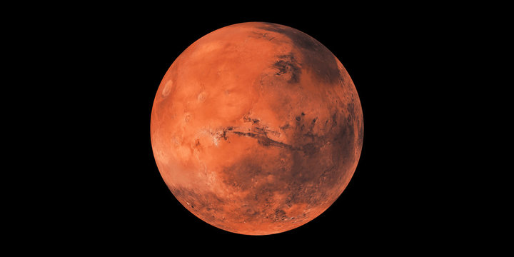

Gezegenler
Merkür
Güneş'e en yakın ve en küçük gezegendir.
Venüs
Dünya'ya benzer ama yüzeyi kavurucu sıcaktır.

Mars
Kızıl gezegen. Gelecekte insanlı keşifler planlanıyor.

Jüpiter
Güneş sisteminin en büyük gezegenidir ve dev bir gaz devidir.

Satürn
İkonik halkalarıyla bilinen gaz devi bir gezegendir.

Uranüs
Yan yatmış şekilde döner ve mavi-yeşil renktedir.
Neptün
Güneş'e en uzak gezegendir, güçlü rüzgarlarıyla bilinir.
Dünya
Yaşamın var olduğu tek gezegen. Mavi ve yeşil güzelliklerle doludur.